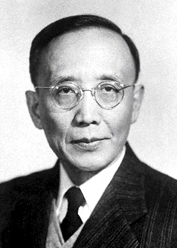
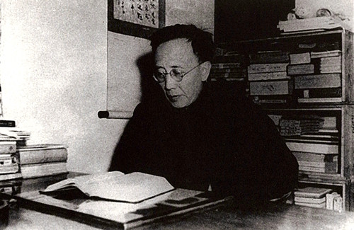
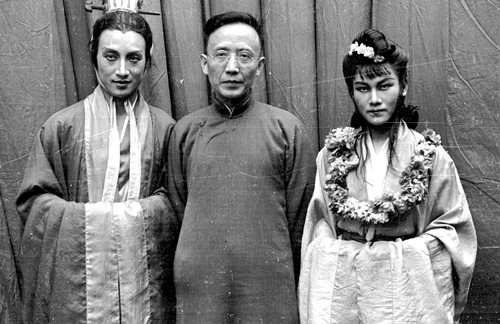
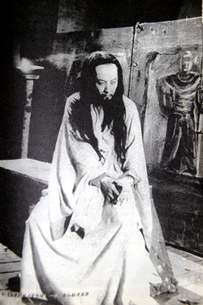

雾季公演”时期的名人名剧欣赏（三）：郭沫若和话剧《屈原》
1937年，抗日战争爆发，重庆作为战时陪都，具有举足轻重的地位。为彻底击垮中国人民的抗日意志，日本侵略者对重庆进行了疯狂的轰炸。但每年10月至次年5月是重庆的雾季，浓雾遮掩，日机无法轰炸。此时，在抗日民族统一战线的指引下，在中共中央南方局和周恩来同志的领导下，重庆的进步戏剧工作者从1941年10月起，有意识的将雾季作为话剧公演的季节，一直延续到1945年，共进行了4季，公演大型话剧103个，独幕剧7个，开创了中国话剧史上的一个黄金时代，俗称“雾季公演”。

郭沫若
郭沫若是中国现代史上一位卓越超群的文化伟人，在文学、历史学、古文字学等广阔的学术领域里留下了丰厚遗产，影响深远。
1938年12月，郭沫若来到重庆，先后担任国民政府军事委员会政治部第三厅厅长、文化工作委员会主任，领导陪都文化界人士积极开展抗日宣传工作。从1938年到1946年，寓居重庆的这8年，是郭沫若革命与创作生涯最重要也是最辉煌的时期。他以充沛的激情、深厚的文学功力，在繁忙的工作之余，创作了《棠棣之花》《屈原》《虎符》《高渐离》《孔雀胆》《南冠草》这6部历史话剧，成为中国现代话剧的经典。其中，以话剧《屈原》影响最大。

郭沫若在重庆渝中区天官府寓所书房，他就是在这间书房里写下了《屈原》等大量作品。
1941年的中国，大片国土沦丧在日本帝国主义手中。此时，国民政府用重兵封锁着延安八路军，又发动了震惊中外的“皖南事变”，直接破坏了抗日民族统一战线。“皖南事变”的消息传出后，郭沫若便以“主张集合，反对分裂”为主题，重写《棠棣之花》剧本，2个月内连演四五十场，在大后方燃起了第一支火把。周恩来抓住这一大好机会，鼓励郭沫若说：“现实生活的话剧很难通过，我们可以演出历史剧，用历史来向人们展示现实，这也是一条很好的斗争新思路嘛。”周恩来的话提醒了郭沫若，他决定以历史剧为武器，不间断地向黑暗现实展开进攻，并开始筹划将1920年写下的讴歌屈原的诗歌《湘累》编写成大型话剧，把对现实的愤怒复活到屈原的时代。
1942年1月2日晚，郭沫若开始动笔写《屈原》了。这段时间，他感到自己的头脑特别清醒，每每提笔，总是文思泉涌，情思敏捷。他一边创作，一边把写好的稿子送到文化工作委员会去刻蜡纸油印，但刻蜡纸的速度还赶不上他写作的速度。从2日晚上到11日晚上，这个剧本只花了10天时间就创作完成了。这10天中，郭沫若每天都有繁忙的工作、会务、社交活动，还做了4次公开演讲。难以想象，他每天是怎样抽时间挤时间来进行创作的。
《屈原》完稿后的几天里，郭沫若常常兴奋地自言自语，完全陶醉在创作成功的喜悦里。不管是在家中，还是在办公室，只要有朋友来，他就拉着人家听他朗读剧本。一次，周恩来专程来到郭沫若家中，郭沫若用了4个小时，把剧本完整地念给他听。当朗诵到剧情高潮《雷电颂》一段时，他自己似乎已变成了被楚怀王囚禁的屈原，声音高亢激越，用他那四川普通话狂呼着：“炸裂呀，我的身体！炸裂呀，宇宙……”周恩来也十分感动，说：“屈原并没有写过这样的诗词，也不可能写出来。这是借屈原的口说出大家的愤怒，表达蒋管区广大人民的愤怒之情，是对国民党压迫人民的控诉，好得很！”
1942年1月24日至2月27日，国民党中央机关报《中央日报》副刊连载了《屈原》的剧本。没多久，国民党中央宣传部副部长潘公展便看出了郭沫若的春秋笔法，大发雷霆地说：“怎么搞的，我们的报纸竟然登起骂我们的文章。”但木已成舟，他只得把报社的副刊编辑孙伏园给撤职了。
3月初，话剧《屈原》便开始正式排练了。周恩来十分重视这部剧，指定阳翰笙为幕后负责人，并要求他和郭沫若选择最好的演员来参与演出。可以说，《屈原》从剧本创作到演出剧团和角色的选定，都是在周恩来的关怀和指导下进行的。最终，《屈原》由民间剧团中华剧艺社来承演，著名导演陈鲤庭执导，剧中屈原由“话剧皇帝”金山饰演，女主角南后和婵娟分别由“四大名旦”中的白杨和张瑞芳饰演，楚怀王由顾而已饰演。其余角色也都由中华剧艺社、中国万岁剧团、中电剧团的优秀演员担任。

郭沫若（中）与《屈原》的演员合影
4月2日，《新华日报》头版刊登了这样一则广告：五幕历史剧《屈原》，明日在国泰公演。中华剧艺社空前贡献，郭沫若先生空前杰作，重庆话剧界空前演出，全国第一的空前阵容，音乐与戏剧的空前试验。这五个“空前”，让《屈原》以先声夺人之势震撼山城。
4月3日，《屈原》在柴家巷（今重庆市渝中区邹容路）的国泰大戏院首演。据说，当晚的重庆正值暴风雨前夜，舞台上的朗诵声应和着剧场外的雷鸣声，轰动和震惊了整个山城。《屈原》犹如冲破阴霾的生命之火，启示着人们对周围政治环境的醒悟。一时间，人们都沉浸在这种情绪和氛围中，无论是马路上、嘉陵江边、车站、码头，或是大学校园，时常可以听到人们高呼着剧中《雷电颂》的台词： “炸裂呀，我的身体！炸裂呀，宇宙！让那赤条条的火滚动起来，像这风一样，像那海一样，滚动起来，把一切的有形，一切的污秽，烧毁了吧！烧毁了吧！把这包含着一切罪恶的黑暗烧毁了吧！”

《屈原》中《雷电颂》一场，金山饰演屈原。
然而，国民党当局很快嗅到了《屈原》隐含的政治意味。这边，话剧正在国泰如火如荼地上演，热闹非凡；那边，潘公展等人几次三番地企图阻挠、叫停《屈原》的排演，甚至威胁要砸烂国泰大戏院。然而，那时正值太平洋战争之后，中国成为英美同盟国，蒋介石为了争取更多的国外援助，不得不做出一点“民主”的样子，这也给《屈原》在夹缝中生存下来的机会。
截止4月20日，《屈原》首轮演出连续进行了17天。这期间，演出场场客满，观众达30万人次，不少人为了买到第二天的票，半夜就带着椅子守在剧场门口，成都、贵阳、桂林等地也有人专程赶来看戏。此外，舆论媒体也高度赞扬《屈原》，当时中央社曾发文称：“上座之佳空前未有”“此剧集剧坛之精英，经多日筹备，惨淡经营，耗资数万……古色古香，堪称绝唱。”
《屈原》的成功演出，将“雾季公演”推向了高潮。4月26日，周恩来为给《屈原》庆功，在天官府七号举行了一次宴会。会上，周恩来对这场斗争做了重要讲话：“在连续不断的反共高潮中，我们钻了国民党反动派一个空子，在戏剧舞台上打开了一个缺口。在这场斗争中，郭沫若同志立了大功。”
新中国成立后，1953年，为纪念世界文化名人屈原逝世2230周年，中国青年艺术剧院再次演出了《屈原》，仍请陈鲤庭担任导演。此后几十年间，由于特殊的政治环境，中国舞台上再未演出《屈原》，直到80年代，才由中央戏剧学院演出，由最早的屈原扮演者金山任导演。而在国外，自1952年起，苏联、捷克斯洛伐克、罗马尼亚相继演出过《屈原》，特别是日本曾三度演出《屈原》，累计500余场，深受日本人民的喜爱和欢迎。